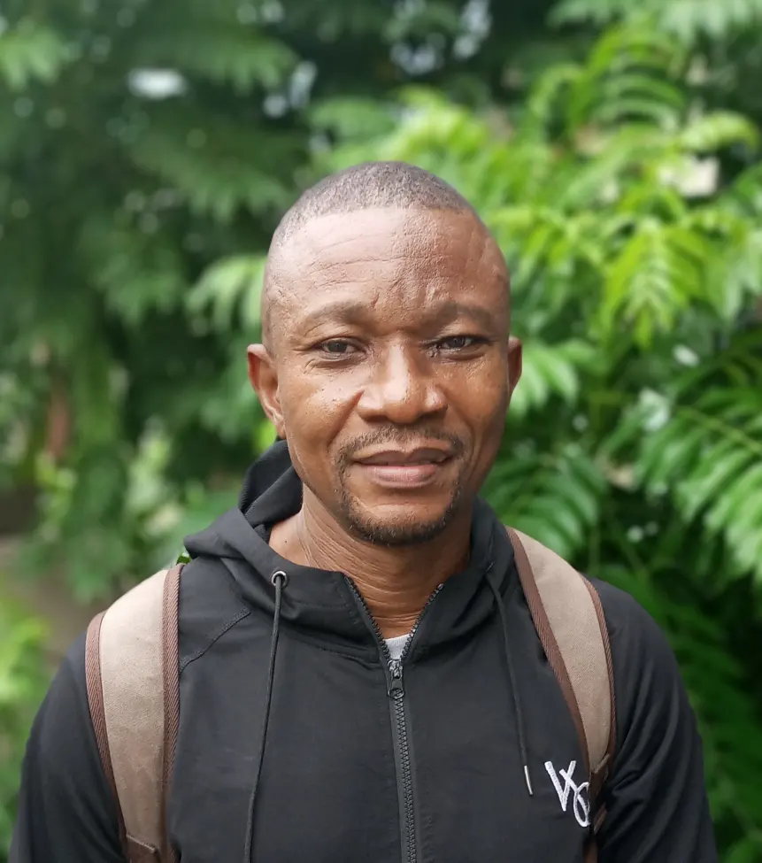

About Me
My name is Emeka, though I have a few nicknames given me by my family, friends, and my peers while growing up, but the most popular nowadays is "Lalas" after a bearded US soccer player called Alexis Lalas. I was born and raised in Port Harcourt also known as the "Garden City" in the oil-rich south of Nigeria.
Port Harcourt, Nigeria

Nigeria, officially the Federal Republic of Nigeria, is a country in West Africa. It covers an area of 923,769 square kilometres (356,669 sq mi); with a population of over 230 million. It is the most populous country in Africa, and the world's sixth-most populous country.